§9.3 三重积分
- ∫abf(x)dx：曲边梯形面积，铜棒质量
- ∬Df(x,y)dxdy：曲顶柱体体积，薄片质量
- ∭Ωf(x,y,z)dxdydz：空间物体的质量
一、定义
f(x,y,z) 为空间有界闭区域 Ω 的有界函数，任意分割 ΔV1⋯ΔVn，任意取点 (ai,bi,ci)∈ΔVi，称 λ→0limi=1∑nf(ai,bi,ci)⋅ΔVi 为 f(x,y,z) 在 Ω 上的三重积分，记为
∭Ωf(x,y,z)dv=∭Ωf(x,y,z)dxdydz
f(x,y,z)=1 时，∭Ω1⋅dV=∭ΩdV=V
二、性质
线性性质
∭Ω(lf+kg)dV=l∭ΩfdV+k∭ΩgdV
可加性
∭ΩfdV(Ω=∭Ω1fdV+∭Ω2fdV=Ω1+Ω2)
保序性
f≥0⇒∭ΩfdV≥0
估值定理
f 在 Ω 连续，m≤f≤M，则 mV≤∭Ωf⋅dV≤MV
中值定理
∭Ωf(x,y,z)dV=f(a,b,c)V
对称性
-
若 Ω 关于 xOy 面对称，Ω上、Ω下
∭ΩfdV={2∭Ω上fdV0f(x,y,z)=f(x,y,−z)f(x,y,z)=−f(x,y,−z)
-
若 Ω 关于 yOz 面对称，Ω前、Ω后
∭ΩfdV={2∭Ω前fdV0f(x,y,z)=f(−x,y,z)f(x,y,z)=−f(−x,y,z)
-
若 Ω 关于 xOz 面对称，Ω左、Ω右
∭ΩfdV={2∭Ω右fdV0f(x,y,z)=f(x,−y,z)f(x,y,z)=−f(x,−y,z)
-
轮换对称性：假设 x,y,z 交换后 Ω 不变，则 ∭Ωf(x,y,z)dV=∭Ωf(y,z,x)dV=∭Ωf(z,x,y)dV
例如：Ω:x2+y2+z2≤R2，有 ∭Ωx2dV=∭Ωy2dV=∭Ωz2dV=31∭Ω(x2+y2+z2)dV
三、三重积分的计算方法
直角坐标系
-
投影法（“先一后二”）
- 投影到 xOy 面上：I=∬Dxydxdy∫ϕ1(x,y)ϕ2(x,y)f(x,y,z)dz（Dxy 为 Ω 在 xOy 上投影区域）
- 投影到 yOz 面上：I=∬Dyzdydz∫ϕ1(y,z)ϕ2(y,z)f(x,y,z)dx（Dyz 为 Ω 在 yOz 上投影区域）
- 投影到 xOz 面上：I=∬Dxzdxdz∫ϕ1(x,z)ϕ2(x,z)f(x,y,z)dy（Dxz 为 Ω 在 xOz 上投影区域）
投影法中的穿线法：垂直投影面，方向与坐标轴正向同向，先穿过积分下限面，再穿过积分上限面
-
截面法（“先二后一”）适用于被积函数为一元函数，且截面为三角形、矩形、圆的情况
I=∭Ωg(x)dV=∫abdx∬Dg(x)dydz=∫ab[g(x)∬Ddydz]dx=∫abg(x)⋅x=常数与Ω截面面积δ(x)dx
例题
-
Ω:x2+y2+z2≤R2
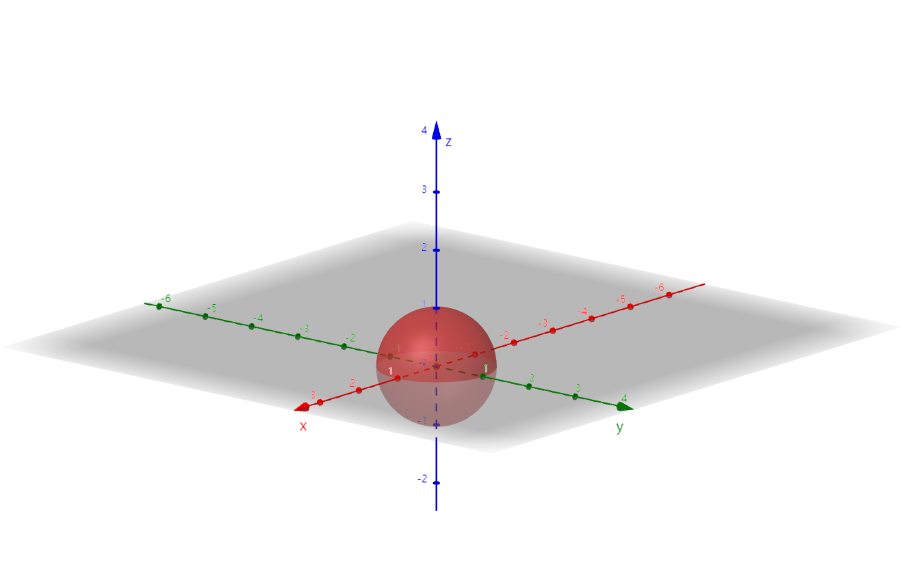
I=∭Ωf(x,y,z)dxdydz=∬Dxydxdy∫−R2−x2−y2R2−x2−y2f(x,y,z)dz
Dxy:x2+y2≤R2
-
求 I=∭Ωf⋅dV，其中 Ω:x2+y2+(z−2)2≤4 和 z=1 所围成的包含球心的部分
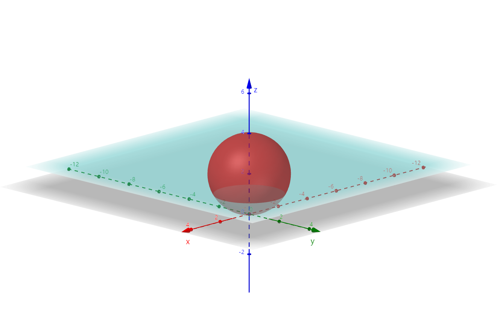
将 Ω 投影到 xOy 平面上，Dxy:x2+y2≤4
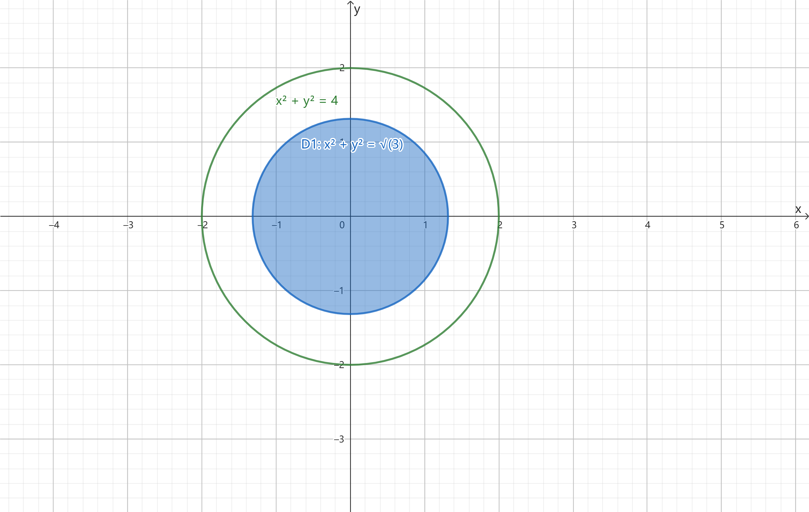
{x2+y2+(z−2)2=4z=2⇒消z{x2+y2=4z=0
{x2+y2+(z−2)2=4z=1⇒消z{x2+y2=3z=0
I=∬D1dxdy∫12+4−x2−y2fdz+∬D2dxdy∫2−4−x2−y22+4−x2−y2fdz，其中 D1:z=1→z=2+4−x2−y2，D2:z=2−4−x2−y2→z=2+4−x2−y2
-
求 ∭Ωxdxdydz，其中 Ω 为 x+y+z=1 与坐标面所围成的区域
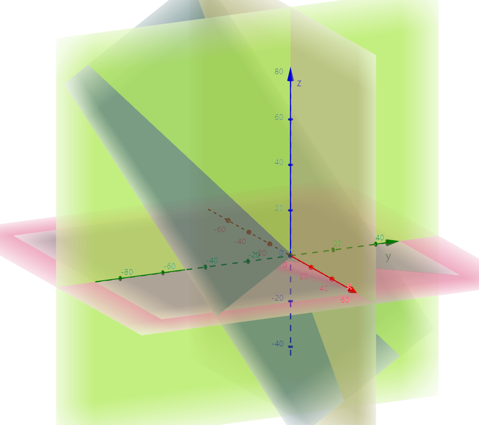
-
投影法
-
Ω 投影到 xOy 面上，用平行 z 轴的射线穿过积分区域。Dxy:x+y≤1(x≥0,y≥0)
I=∬Dxydxdy∫01−x−yxdz=∬Dxyx(1−x−y)dxdy=∫01dx∫01−xx(1−x−y)dy=241
-
Ω 投影到 yOz 面上，用平行 x 轴的射线穿过积分区域。Dyz:y+z≤1(y≥0,z≥0)
I=∬Dyzdydz∫01−y−zxdz=∬Dyzx(1−y−z)dydz=∫01dy∫01−yx(1−y−z)dz=241
-
截面法
-
用平行 xOy 的面截 Ω
I=∫01dz∬Dzxdxdy=∫01dz∫01−zdx∫01−x−zxdy=241
-
用平行 yOz 的面截 Ω
I=∫01dx∬Dxxdydz=∫01(x∬Dxdydz)=∫01xδ(x)dx=21∫01x(1−x)2dx=241
-
求 I=∭Ωz2dV，Ω 为 z=x2+y2 与 z=1 所围成的闭区域
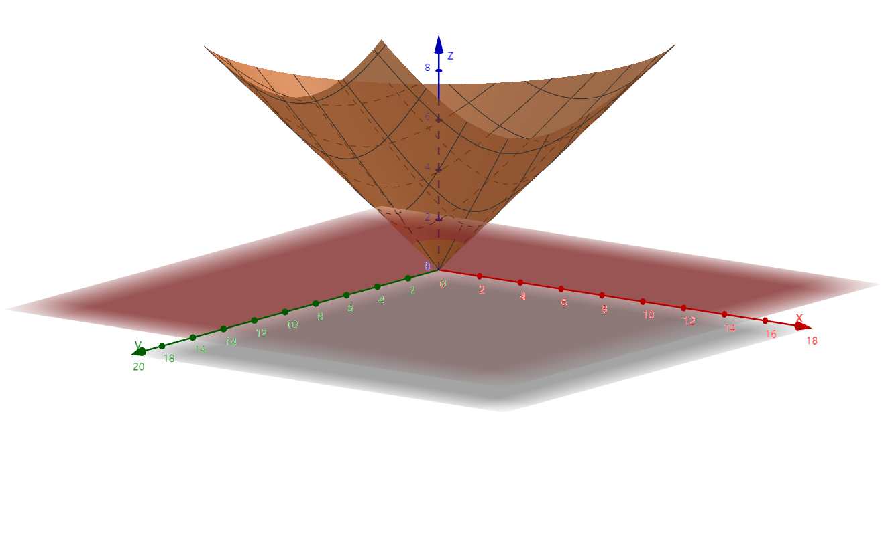
截面法较易，用平行 xOy 的面截 Ω
I=∫01dz∬Dzz2dxdy=∫01z2δ(z)dz=∫01z2πz2dz=51π
-
求 I=∭Ωz2dV，Ω 为 z=x2+y2 与 z=1 所围成的闭区域
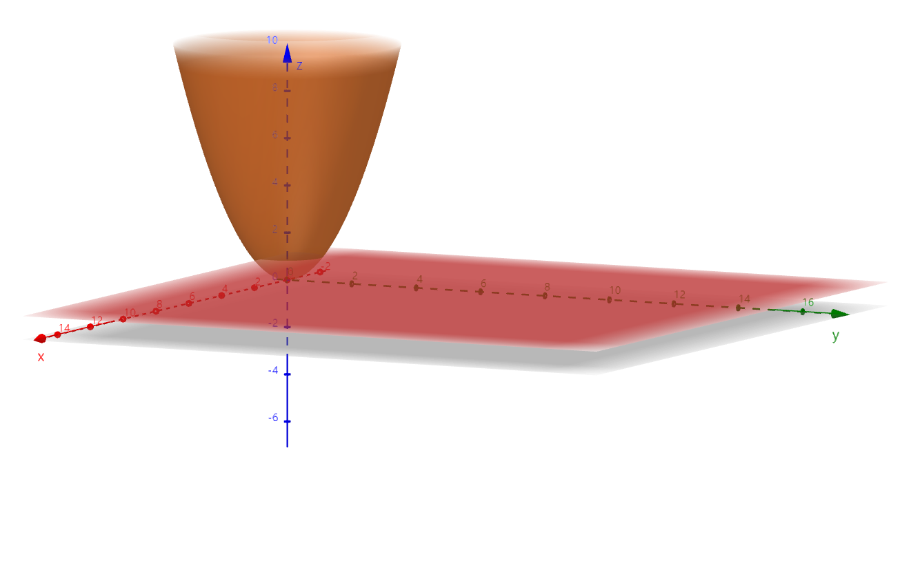
I=∫01dz∬Dzz2dxdy=∫01z2δ2(z)dz=∫01z2πzdz=4π
-
求 I=∭Ωx2dV，Ω 为 z=x2+y2 与 z=1 所围成的闭区域
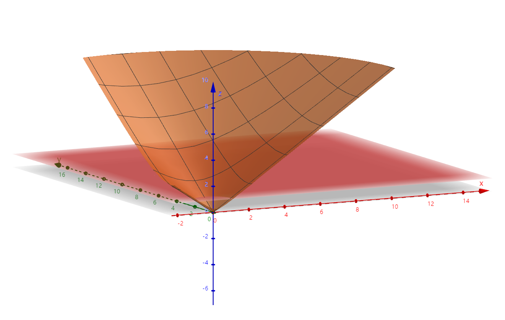
-
投影法：将 Ω 投到 xOy 平面上
I=∬Dxydxdy∫x2+y21x2dz(Dxy:x2+y2≤1)=∬Dxyx2(1−x2+y2)dxdy=∫02πdθρ2cos2θ(1−ρ)⋅ρdρ=5π
-
截面法：用平行于 xOy 的平面去截
I=∫01dz∬Dzx2dxdy(Dz:x2+y2≤z2,关于y=x对称)=∫01dz∫02πdθ∫0zρ2cos2θρdρ=5π
-
求 I=∭Ω(x+z)dV，Ω 为 z=x2+y2 与 z=1−x2−y2 所围成的闭区域
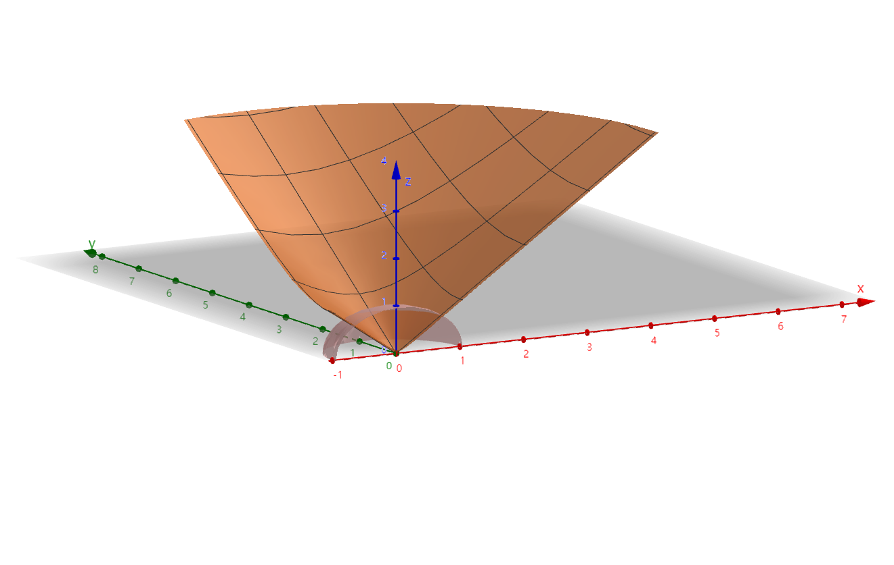
投影到 xOy 平面上：Dxy:x2+y2≤21
I=∬Dxydxdy∫x2+y21−x2−y2(x+z)dz=∬Dxyx(1−x2−y2−x2+y2)+∬Dxy21(1−x2−y2−x2−y2)dxdy=8π
-
将 ∫0adx∫0xdy∫0yf(z)dz 化为定积分（交换积分次序为 x→y→z，y→x→z）
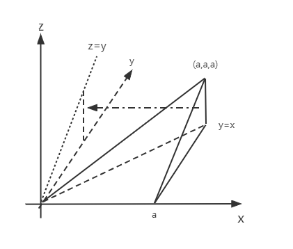
-
法一：先确定积分区域 Ω 为 (0≤x≤a,0≤y≤x,0≤z≤y)
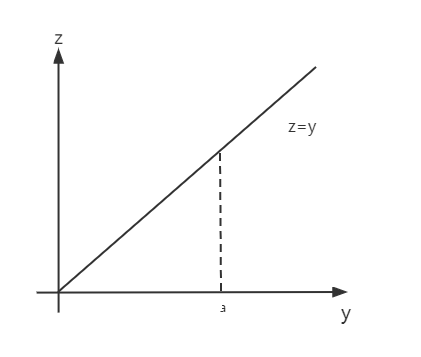
-
截面法：z=z0
I=∫0adz∬Dxyf(z)dxdy=∫0af(z)21(a−z)2dz=21∫0af(z)(a−z)2dz
-
投影法：Ω→yOz 平面
I=∬Dyzdydz∫yaf(z)dx=∫0adz∫zady∫yaf(z)dx=21∫0af(z)(a−z)2dz
-
法二：直接交换
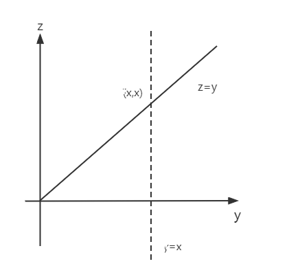
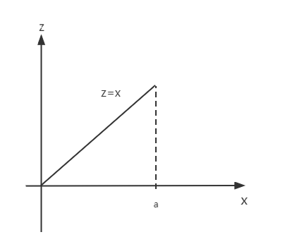
I=∫0adx∫0xdy∫0yf(z)dz=∫0adx∬Dzf(z)dydz=∫0adx∫0xdz∫zxf(z)dy=∬Dxzdxdz∫zxf(z)dy=∫0adz∫zadx∫zxdy=21∫0af(z)(a−z)2dz
-
I=∫01dx∫0xdy∫0xyf(x,y,z)dz，交换积分次序为 y→x→z
原次序：z→y→x
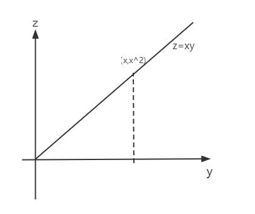
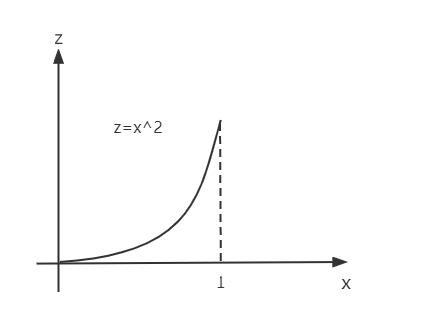
原式=∫01dx∫0x2dz∫xzxf(x,y,z)dy[交换y、z]=∫01dz∫z1dx∫xzxf(x,y,z)dy[交换x、z]
柱坐标系（~投影法+极坐标）
适用于 x2+y2、xy、yx，Ω 在 xOy 面上，且 Dxy 与圆有关
⎩⎨⎧x=ρcosθy=ρsinθz=z,dV=ρdρdθdz
I=∫αβdθ∫ϕ1(θ)ϕ2(θ)ρdρ∫ψ1(ρ,θ)ψ2(ρ,θ)f(ρcosθ,ρsinθ,z)dz
例题
-
求 z=a1(x2+y2) 和 z=2a−x2+y2 所围成的体积
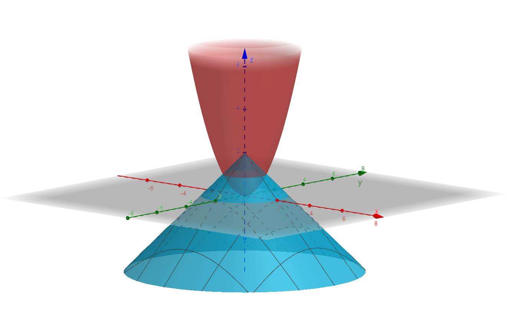
-
二重积分法
V=V上曲−V下曲=∬Dxy(2a−x2+y2)dxdy−∬Dxya1(x2+y2)dxdy=∬Dxy[2a−x2+y2−a1(x2+y2)]dxdy(Dxy:x2+y2≤a2)=∬D1dxdy∫0adz+∬D2dxdy∫a2adz=πa∫0azdz+π∫a2a(2a−z)2dz=65πa3
-
三重积分法：V=∭Ω1⋅dV，Ω:z=ax2+y2→z=2a−x2+y2
-
投影：Ω→xOy，Dxy:x2+y2≤a2
I=∬Dxydxdy∫ax2+y22a−x2+y21⋅dz=∬Dxy[2a−x2+y2−ax2+y2]dxdy=∫02πdθ∫0a(2a−ρ−aρ2)ρdρ=65πa3
-
截面：用平行于 xOy 的平面截 Ω
I=∫0adz∬Dz11dxdy+∫a2adz∬Dz21dxdy=∫0aπazdz+∫a2aπ(2a−z)2dz=65πa3
-
柱坐标
I=∫02πdθ∫0aρdρ∫a1ρ22a−ρ1⋅dz=2π∫0aρ(2a−ρ−a1ρ2)dρ=65πa3
-
求 I=∭Ωzx2+y2dV，其中 Ω:x2+y2=2x、z=x 及 xOy 面所围成的闭区域
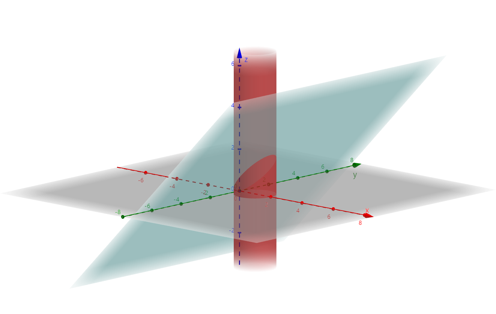
Dxy:x2+y2≤2x
I=∫−2π2πdθ∫02cosθρdρ∫0ρcosθzρdz=∫−2π2πdθ∫02cosθρ⋅2ρ2cos2θ−02ρdρ=∫−2π2π21cos2θ51(2cosθ)5dθ=∫−2π2π516cos7θ=532∫02πcos7θdθ=175512
-
将 ∭Ωf(x,y,z)dV 化为柱坐标系下三次积分。Ω:z=4−x2−y2 和 z=31x2+y2 所围成的闭区域
⎩⎨⎧z=4−x2−y2z=31(x2+y2)→{x2+y2≤3→Dxyz=0
θ:0→2π，ρ:0→3，z:31ρ2→4−ρ2
I=∫02πdθ∫03ρdρ∫31ρ24−ρ2f(x,y,z)dz
-
将 ∭Ωf(x,y,z)dV 化为柱坐标系下三次积分。Ω:x2+y2+z2=4 和 z=−1 所围成的包含球心的区域
Dxy:x2+y2≤4
{x2+y2+z2=4z=−1→{x2+y2=3z=0
θ:0→2π，ρ:0→2，z:−1→4−ρ2(Dx′y:x2+y2≤3),−4−ρ2→4−ρ2(Dx′′y:3≤x2+y2≤4)
ParseError: KaTeX parse error: Got function '\sqrt' with no arguments as superscript at position 54: …d\theta \int_0^\̲s̲q̲r̲t̲{3}\rho \mathrm…
球坐标系
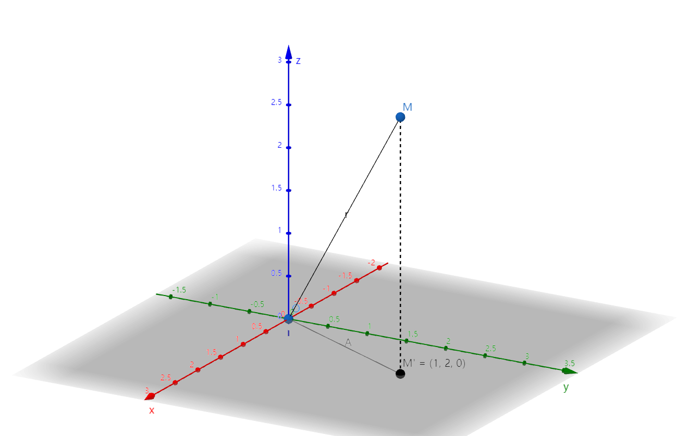
适用于 Ω 与锥面或球面有关，被积函数 x2+y2+z2
(ϕ=∠zOM,θ=∠xOM′,r=∣OM∣)⎩⎨⎧x=rsinϕcosθy=rsinϕsinθz=rcosϕ
dV=r2sinϕdϕdθdr
I=∭Ωf(rsinϕcosθ,rsinϕsinθ,rcosϕ)r2sinϕdϕdθdr=∫αβdθ∫a1(θ)a2(θ)sinϕdϕ∫b1(ϕ,θ)b2(ϕ,θ)f(ϕ,θ,r)r2dr
例题
-
求 I=∭Ωx2+y2+z2dV，Ω:x2+y2+z2=z 所围成的闭区域
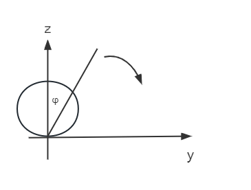
θ:0→2π，φ:0→2π，r:0→cosφ
I=∫02πdθ∫02πsinφdφ∫0cosφr⋅r2dr=10π
-
求 I=∭Ω(x+y+z)e−(x2+y2+z2)dV，其中 Ω:x2+y2+z2=1 且 z≥0（上半球体）
解：Ω 关于 xOz 和 yOz 面对称
I=∭Ωze−(x2+y2+z2)dV=∫02πdθ∫02πsinφdφ∫01rcosφe−r2r2dr=π(21−e1)
-
求 I=∭Ωx2dV，其中 Ω:x2+y2+z2≤1
解：Ω 具有轮换对称性
I=∭Ωy2dV=∭Ωz2dV=31∭Ω(x2+y2+z2)dV=31(∫02πdθ)(∫0πsinφdφ)(∫01r2⋅r2dr)=31⋅2π⋅2⋅51=154π
三重积分换元公式
⎩⎨⎧x=x(u,v,w)y=y(u,v,w)z=z(u,v,w)
I=∭Ωf(x,y,z)dxdydz=∭Ωf(x(u,v,w),y(u,v,w),z(u,v,w))∣J∣dudvdw
其中 J(u,v,w)=∂(u,v,w)∂(x,y,z)=xuyuzuxvyvzvxwywzw
- 广义柱坐标变换 ⎩⎨⎧x=aρcosθy=bρsinθz=z，dV=abρdρdθdz（Dxy 与椭圆有关，Ω 与椭球面有关）
- 广义球坐标变换 ⎩⎨⎧x=arsinφcosθy=brsinφsinθz=crcosφ，dV=abcr2sinφdφdθdr
例题
求 a2x2+b2y2+c2z2≤1 的体积
解：
I=∭Ω1⋅dV=∫02πdθ∫0πsinφdφ∫011⋅abc⋅r2dr=34πabc